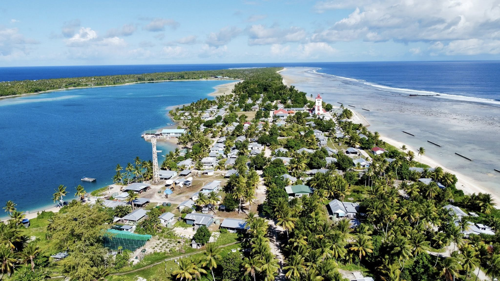

Niutao is one of the northern islands of Tuvalu, known for its strong cultural identity and deep-rooted traditions. Unlike many other atolls in Tuvalu, Niutao is a raised coral island, giving it a slightly higher elevation and a distinct landscape with a central lagoon surrounded by lush vegetation. Life on Niutao revolves around community, where cooperation, respect, and shared responsibilities are essential parts of everyday living. The island has a long history, with oral traditions connecting its people to neighboring islands like Nanumea and beyond. Fishing and farming remain the main sources of sustenance, while traditional knowledge—such as navigation, storytelling, and dance—is carefully preserved and passed down through generations. Niutao is also known for its strong church communities, which play a central role in bringing people together. Though small and remote, Niutao stands as a symbol of resilience and unity. Its people maintain a deep connection to their land and sea, continuing to live in harmony with nature while holding tightly to their cultural heritage in an ever-changing world.